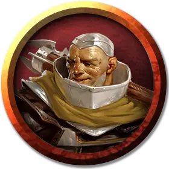

Воин Секиры Мирабара
Axe of Mirabar Soldier
Средний Гуманоид (Щитовой дварф), законно-добрый

Класс Доспеха 18 (латы)
Хиты 67 (9к8 + 27)
Скорость 25 футов
| мод | спас | ||
|---|---|---|---|
| СИЛ | 16 | +3 | +3 |
| ЛОВ | 13 | +1 | +1 |
| ТЕЛ | 16 | +3 | +3 |
| мод | спас | ||
|---|---|---|---|
| ИНТ | 10 | +0 | +0 |
| МДР | 11 | +0 | +0 |
| ХАР | 10 | +0 | +0 |
Навыки Атлетика +5, Восприятие +2
Сопротивление урону яд
Чувства тёмное зрение 60 футов, пассивное Восприятие 12
Языки Общий, Дварфийский
Опасность 3 (700 опыта)
Бонус мастерства +2
Особенности
Дварфская устойчивость. Воин Секиры Мирабара совершает с преимуществом спасброски от яда.
Действия
Мультиатака. Воин Секиры Мирабара совершает две атаки боевым топором. Если у него вынут ручной топор, он может также совершить атаку ручным топором.
Боевой топор. Рукопашная атака оружием: +5 к попаданию, досягаемость 5 футов, одна цель. Попадание: 7 (1к8 + 3) рубящего урона, или 8 (1к10 + 3) рубящего урона, если используется двумя руками.
Ручной топор. Рукопашная атака оружием: +5 к попаданию, досягаемость 5 футов, одна цель. Попадание: 6 (1к6 + 3) рубящего урона.
Тяжелый арбалет. Дальнобойная атака оружием: +3 к попаданию, дистанция 100/400 футов, одна цель. Попадание: 6 (1к10 + 1) колющего урона.